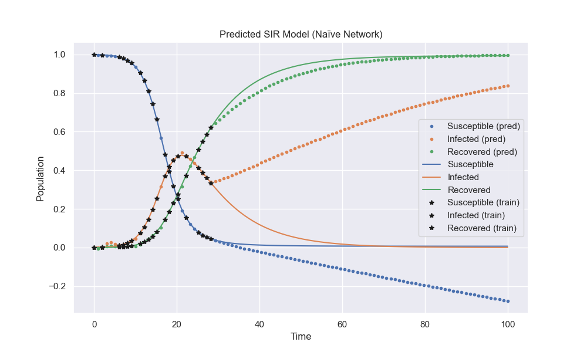
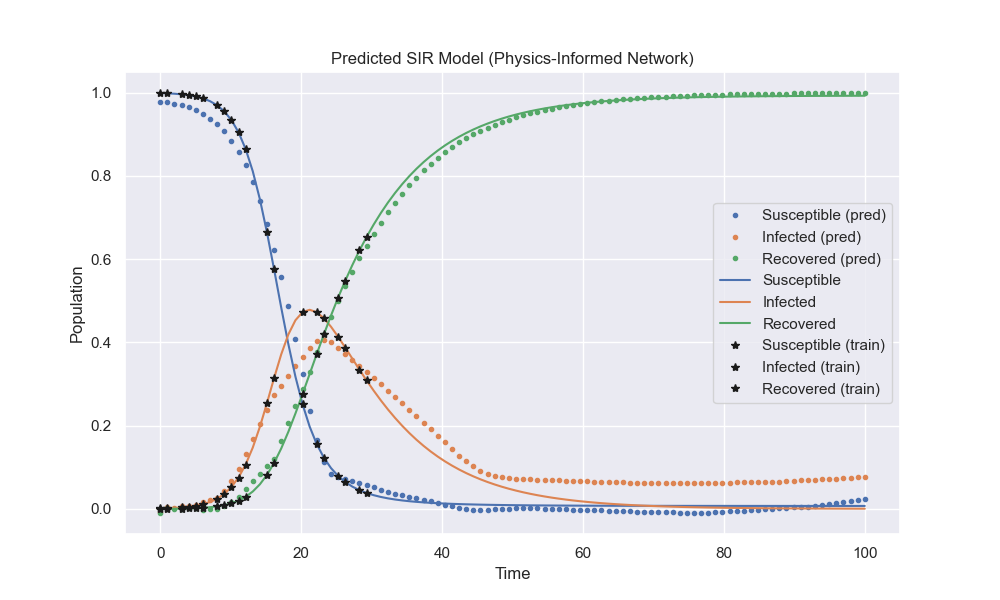

The Susceptible-Infectious-Recovered (SIR) model is an epidemiological model used to evaluate and predict the spread of infectious diseases within a population. The model consists of three ordinary differential equations:
The Susceptible Equation: $$\frac{dS}{dt} = \frac{-\beta S(t) I(t)}{{N}}$$
The Infected Equation: $$\frac{dI}{dt} = \frac{\beta S(t) I(t)}{N} - \gamma I(t)$$
The Recovered Equation: $$\frac{dR}{dt} = \gamma I(t)$$
This project aims to apply physics-informed neural networks (PINNs) to the SIR equations. By introducing mathematical constraints from the differential equations in the loss function, the neural network is able to better generalize to the behavior of the system. The accurate prediction of the SIR model can offer insights into the duration of an outbreak, the total number of infections, and the peak of an outbreak. This information is vital for healthcare officials to determine the appropriate allocation of resources during a crisis, which can ultimately save lives.
Physics-informed Neural Networks by Raussi et al. presents a method of using neural networks to solve differential equations by introducing the mathematical constraints as a regularization agent in the loss function. This prior information serves to shrink the solution space of the network, enabling it to quickly learn a generalized function that obeys the given laws. Generalization is of increased importance in the context of complex biological and physical domains, which are often plagued by low amounts of training data. The authors demonstrate the method by applying PINNs to notable problems such as Schrodingers equation and the Allen-Cahn equation. In these cases, PINNs are able to generate accurate predictions of the non-linear behavior despite the small data sets. The level of performance in these predictions is especially impressive when considering the relative simplicity in the implementation of PINNs.
Though, as the authors recognize, PINNs are not a comprehensive replacement to classical methods. Rather, they offer alternative paths to solving partial differential equations with new features such as parameterization and transfer learning, which can outweigh analytical techniques in specific domains. In our case, we choose to apply PINNs to the SIR model to predict the dynamics of disease spread within a population. PINNs can offer better generalization if the epidemiological data has considerable noise or is sparse. The flexibility of PINNs also allows it to be used in inverse problems, such as estimating model parameters.
The project employs Physics-Informed Neural Networks (PINNs) to solve the Susceptible-Infectious-Recovered (SIR) model, a set of ordinary differential equations used in epidemiology to predict the spread of infectious diseases. PINNs integrate the mathematical structure of the differential equations directly into the loss function of a neural network. This approach allows the network to leverage both the available data and the underlying physics of the problem, leading to more accurate predictions even with limited or noisy data.
The core of our implementation is a neural network designed to approximate the solutions of the SIR model. The network, implemented using PyTorch, consists of five fully connected layers:
Additionally, the model includes parameters β and γ, representing the infection rate and recovery rate, respectively. These are treated as learnable parameters within the network, allowing the model to adjust these values based on the data.
The key innovation of our approach is the incorporation of the SIR model's differential equations into the loss function. This is achieved through a custom physics-informed loss function that penalizes deviations from the expected dynamics as described by the equations:
This physics-informed loss is combined with a traditional mean squared error loss calculated from the training data, allowing the network to learn from both the data and the physics of the problem.
The model is trained using the Adam optimizer, with a learning rate scheduler to reduce the learning rate when the validation loss plateaus. The training process involves:
After training, the model's predictions for the SIR curves are compared against the actual data to assess its accuracy and generalization capability.
Click here to view the notebook on GitHub.First, we applied PINNs to a simple differential equation: Newton's Cooling Law. This equation is described by: $$\frac{dT}{dt} = R (T_{env} - T)$$ where R is the cooling rate, T_env is the temparature of the environment, and T is the temperature of the object.
Next, we trained a simple neural network to model the SIR equations. This network has no prior knowledge of the dynamics of the system and is purely minimizing the mean square error loss from the training data. As shown below, this network fails to generalize well to the future behavior of the SIR model.
Then, we used the same neural network architecture, but incorportated the physics-informed loss in the optimization. As shown below, the nerual network with the same architecture peforms much better in its predictions of the SIR model. This demonstrates the value in providing the prior mathematical knowledge from the system of differential equations.
As shown above, the application of PINNs to the SIR equations generates substantial improvements over basic neural network architectures. By informing the loss function with prior information about the system, the model is able to better generalize to the long-term behavior of the disease spread. The increased accuracy in modeling these equations can provide policymakers with valuable knowledge about the future state of the population. In the future, this work could be further progressed by applying PINNs to more complicated epidemiological equations such as the SEIR or SEIRS models.
[1] M. Raissi, P. Perdikaris, and G.E. Karniadakis. Physics-informed neural networks: A deep learning framework for solving forward and inverse problems involving nonlinear partial differential equations. Journal of Computational Physics, vol. 378, pp. 686-707, February 2019.
Yash Bhora and Henry Noyes